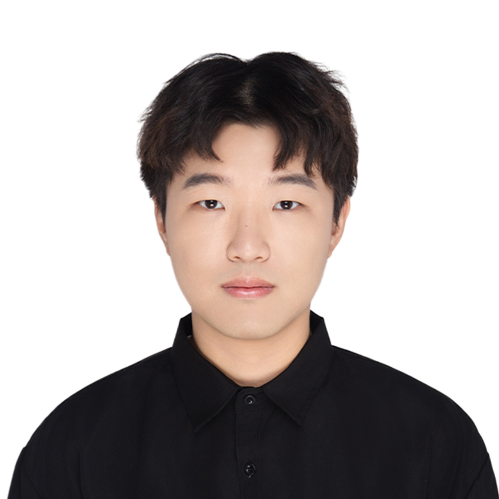

PhD student
Zhen Qin
First-year PhD student in Mechanical Engineering · Biomedical Engineering concentration
- Research interests
- Microvessel fabrication, mechanisms of angiogenesis, and basement membrane restoration
- Fun fact
- I made music during my undergraduate years.